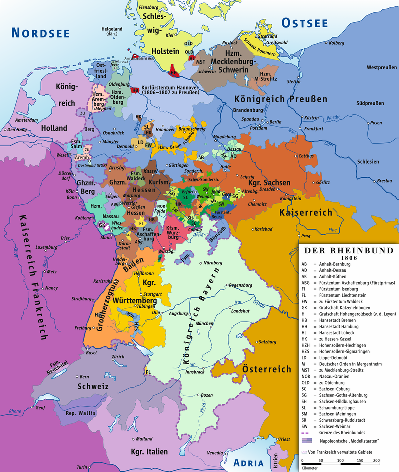
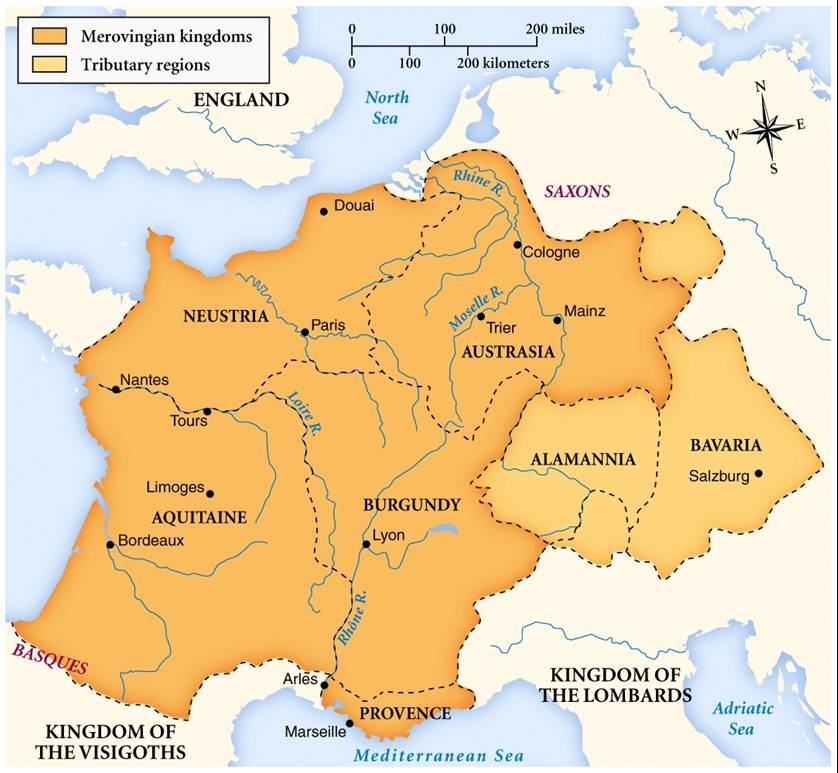
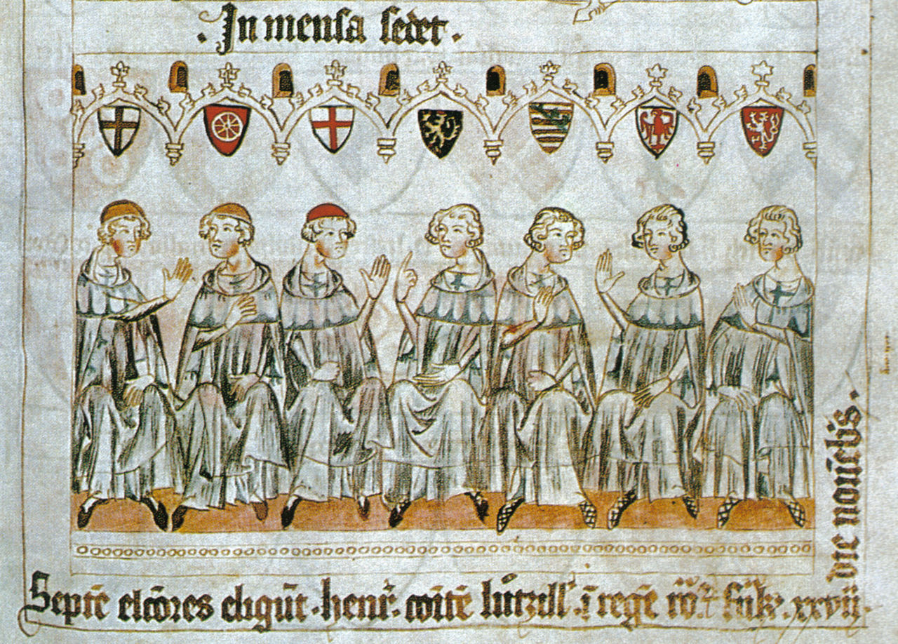
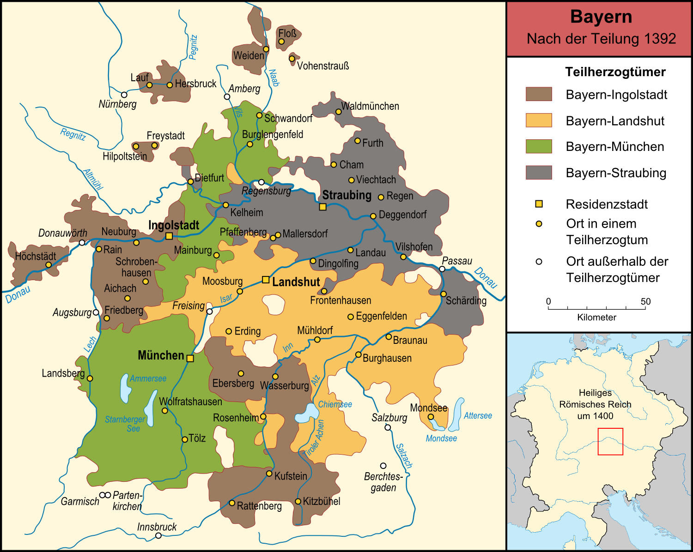
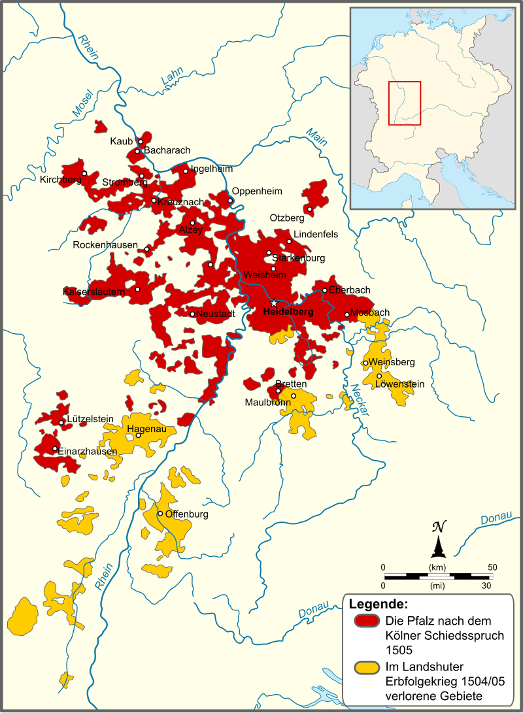
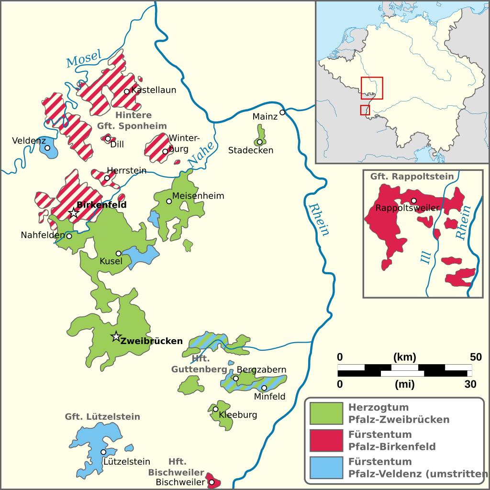

바이에른의 배신 (1) - 고래 싸움에 터지는 새우 등
게시: 2024-08-12T06:30:31+09:00
러시아 원정에서 참패한 뒤 1813년 수세에 몰린 나폴레옹이 오히려 공세로 나아가 작센으로 진출한 이유는 러시아-프로이센 연합군의 침공을 받는 최전선이었던 작센의 이탈을 막기 위함이었습니다. 그러나 뜻밖에도, 정작 나폴레옹의 등에 가장 먼저 칼을 꽂은 것은 가장 친불적인 성향을 보이던 바이에른 왕국이었습니다. 작센에 비하면 전선 저 멀리 후방에 있던 바이에른은 대체 왜 가장 먼저 나폴레옹을 배신했을까요? 실은 그걸 이해하려면 엄연히 독일권 공국이었던 바이에른은 애초에 왜 가장 친불적인 성향을 보였는지를 이해해야 합니다.

(1812년 당시의 라인연방 지도입니다. 바이에른 왕국이 Königreich Bayern라고 표시되어 있는데, 보시다시피 프로이센과는 아니지만 오스트리아와는 그대로 국경을 접하고 있습니다. 또한 그 남쪽으로는 이탈리아 왕국과 국경을 맞대고 있는데, 이 이탈리아 왕국의 국왕은 보나파르트 나폴레옹 본인이었고 실질적인 통치자는 부왕(vice-roi)인 나폴레옹의 의붓아들 외젠이었습니다.) 먼저, 바이에른이라는 소국의 특성에 대해 보시겠습니다. 바이에른은 남부 독일 지역인데, 프랑스와 북부 독일, 보헤미아 사이에 절묘한 완충지대 역할을 하기에 딱 좋은 위치를 점하고 있었습니다. 바이에른이 최초로 공작령이 된 것은 대략 6세기 중반이었는데. 이렇게 된 것도 그 위치 덕분이었습니다. 클로비스(Clovis) 1세가 세운 메로빙거(Merovinger) 왕조의 프랑크 왕국이 바이에른 일대를 복속시킨 뒤 직할령으로 편입시키지 않고 바이에른의 지배자를 공작으로 임명한 뒤 일종의 자치령 비슷한 공작령으로 만들었는데, 이는 바이에른 동쪽에 존재하는 아바르(Avar)족과 슬라브인들을 상대하기 위한 완충지대로 바이에른의 역할을 설정했기 때문이었습니다. 즉, 어떤 국가이든 그 지정학적인 위치에서 자유로울 수가 없는 법인데, 그런 점이 나폴레옹 시대까지 그대로 이어지게 된 것입니다.

(576년 경의 메로빙거 왕조 프랑크 왕국의 세력권입니다. 바이에른(Bayern), 즉 영어로 바바리아(Bavaria)는 조공국으로 표시되어 있습니다. 그 옆의 Alamannia는 독일계 부족인 알레마니(Alamanni)족이 사는 곳을 뜻했습니다. 프랑스어로 독일을 알레마뉴(Allemagne)라고 부르는데, 그 이름도 바로 여기서 유래한 것입니다.) 여기서 길고 복잡한 바이에른 공국의 역사를 다 다룰 수는 없고, 중세를 거쳐 근대기로 이어지면서 바이에른은 신성로마제국 산하의 선제후(imperial prince-elector, 독일어로 Kurfürst (쿠어푸어스트)) 공국이 되었다는 것을 결론으로 보시면 되겠습니다. 신성로마제국은 볼테르의 말대로 신성하지도 않고 로마하고 상관도 없으며 제국도 아닌 이상한 연합체로서, 그 지배자는 원래 선제후 중에서 선거로 뽑게 되어 있었습니다. 그러니까 바이에른은 독립왕국이 될 수 없는 신성로마제국 산하의 자치령 정도에 불과했는데, 역으로 생각하면 세력만 잘 모으면 바이에른 공작이 신성로마제국 황제가 되는 것도 가능한 이야기였습니다. 바이에른 공국은 결코 작은 공작령이 아니었기 때문에 그게 전혀 말도 안되는 이야기는 아니었습니다. 많은 선제후들이 신성로마제국 내에서 여러 주들을 다스리고 있었기 때문에 거물급 선제후들에게는 투표권이 여러 개 있었는데, 가령 1792년 브란덴부르크 (그러니까 사실상 프로이센) 선제후는 8표를, 바이에른 선제후와 하노버 선제후는 각각 6표씩, 보헤미아 국왕은 3표를 가지고 있었습니다.
('썩어도 준치'라는 말이 있습니다만, 애초에 신성로마제국은 준치가 아니었습니다.)

(이 그림은 1340년경 당시 신성로마제국의 선제후들을 그린 그림입니다. 얼굴이 다 똑같이 생겼네요. 왼쪽부터 쾰른 대주교, 마인츠 대주교, 트리에르 대주교, 팔츠(Pfalz, 영어로는 Palatine) 백작, 작센 공작, 브란덴부르크 후작, 보헤미아 국왕입니다.) 그런데 이렇게 이론적으로는 선제후 중 누구나 신성로마제국 황제가 될 수 있었지만 실제로는 18세기 중반까지 3백년 동안 신성로마제국 황제는 합스부르크 왕가에서 독점하고 있었습니다. 당시 독일권은 합스부르크 가문이 압도적인 영향력을 발휘하고 있었는데, 18세기 들어서면서 북부 독일의 프로이센이 희대의 영웅인 프리드리히 대왕을 앞세워 독일권의 패권을 놓고 합스부르크와 사사건건 충돌하게 되었습니다. 그러니까 18세기 이후 독일권의 소국들은 프로이센과 오스트리아 사이에서 고래 싸움에 등이 터지는 새우 신세를 벗어나기가 어려웠습니다. 그렇게 등 터지는 새우들 중에서도 특히 사이즈가 어중간하게 큰 새우는 집중적으로 피해를 보기 쉬웠습니다. 바로 바이에른의 신세가 그랬습니다. '나는 그냥 중립으로 있을래'라는 것은 18세기 독일권에서 존중받기 어려운 선택이었습니다. 1701-1714년의 스페인 왕위 계승 전쟁, 1740-1748년의 오스트리아 왕위 계승 전쟁, 1778-1779년의 바이에른 왕위 계승 전쟁 등에서 바이에른은 오스트리아와 프로이센 사이에서 이리저리 걷어채이며 피를 흘렸고 조금씩 영토를 빼앗겼습니다. 오스트리아 왕위 계승 전쟁 와중인 1742~1745년의 짧은 기간 중안 바이에른 공작인 카알 알브레히트(Karl Albrecht, 영어로는 Charles Albert)가 무려 3백년 만에 비(非)합스부르크 가문 출신 신성로마제국 황제 카알 7세로 등극하는 짧은 영광도 누렸으나, 결국 두 강국 사이에서 소국의 신세는 뻔했습니다. 심정적으로 남부 독일권의 소패국으로서 바이에른은 같은 카톨릭 국가인 오스트리아와 정서를 같이 했으나, 합스부르크 가문의 패권은 결코 달가운 것이 아니었기 때문에 종종 프로이센의 도움(?)을 받기도 했습니다. 그러나 17세기에 끔찍한 종교 전쟁이었던 30년 전쟁을 겪은 바이에른 사람들은 당시 적국이자 프로테스트탄트 왕국인 프로이센을 싫어했고, 이런 정서적 전통은 1871년 통일 독일 제국 선포 이후에도 이어질 정도였습니다.
(독일 관광에서 빼놓을 수 없는 명소인 노이슈반슈타인(Neuschwanstein) 성도 바이에른에 있습니다. 프로이센 국왕 빌헬름(Wilhelm) 1세를 통일 독일 제국의 초대 카이저(Kaiser)로 추대하자고 제안한 것이 당시 바이에른 국왕 루드비히(Ludwig) 2세였는데, 바로 이 양반이 이 성을 지었습니다. 루드비히 2세는 이 성을 짓느라 국고를 쓰지는 않았고 개인적인 빚을 냈는데, 그 빚의 규모에 놀란 신하들이 그를 말리려 했지만 왕은 듣지 않았습니다. 결국 그는 신하들에 의해 정신이상 판정을 강제로 받고 요양 중에 매우 의심스러운 익사에 의한 자살을 당했습니다. 1900년까지도 바이에른 왕국에서는 카이저의 생일에조차 공공건물에 독일 제국 깃발을 거는 것을 금지하고 오로지 바이에른 깃발만을 걸었다고 합니다.) 그런데 유럽 정치는 매우 복잡했습니다. 바이에른에게는 별로 반갑지 않은 힘센 이웃이 오스트리아와 프로이센 둘 밖에 없는 것도 아니었습니다. 바로 인근에 훨씬 더 강력한 전통의 강자 프랑스가 있었던 것입니다. 프랑스는 30년 전쟁 당시엔 적국이었지만 오스트리아 왕위 계승 전쟁에서는 프로이센과 함께 바이에른편이었습니다. 당시엔 유럽 전체가 프랑스의 사회문화적 영향권 아래 있었다고 해도 과언이 아니어서, 거의 모든 유럽 귀족들은 프랑스어를 말할 줄 알았고 심지어 집에서 가족들끼리도 독일어보다는 프랑스어를 쓰곤 했습니다. 그렇게 모두가 동경하던 선진국 프랑스가 지역 깡패인 오스트리아와 프로이센으로부터 바이에른을 지켜줄 든든한 좋은 이웃이 될 수 있었을까요? 천만에 콩떡이었습니다. 프랑스도 호시탐탐 바이에른의 영토를 탐냈습니다. 국경을 맞대고 있지도 않은데 어떻게 영토를 탐내냐고요? 당시 유럽 정치는 진짜 이상하여, 국경 밖의 고립영토(exclave)가 꽤 많았습니다. 바이에른의 경우도 마찬가지였습니다. 특히 바이에른은 프랑스가 매우 탐을 내는 고립영토를 가지고 있었습니다. 바로 팔츠(Pfalz) 선제후령이었습니다. 팔츠 선제후령을 프랑스가 탐을 낸 이유는 간단했습니다. 이 지역이 바로 라인강 좌안, 그러니까 프랑스쪽에 있었기 때문이었습니다.

(1392년 바이에른 공작령의 지도입니다. 군데군데 국경 밖에 남의 나라 땅으로 둘러싸인 고립영토들이 눈에 띕니다. 근대 유럽에서는 국가란 민족이나 자연 경계 따위가 아닌 왕족들간의 땅따먹기 놀이의 결과였기 때문에 이런 고립영토는 결코 희귀한 것이 아니었습니다.)

(이건 1505년 경의 팔츠 선제후령을 보여주는 지도입니다. 팔츠(Pfalz)는 영어로는 팰러티닛(Palatinate)이라고 불립니다. 라인강을 프랑스와 독일 사이의 자연 경계로 만드는 것은 루이 14세 등 역대 프랑스 국왕들이 다들 꿈꾸는 것이었고, 그걸 마침내 해낸 영웅이 바로 나폴레옹이었습니다. 물론 나폴레옹의 몰락과 함께 쾰른과 본 등 라인강 하류 좌안 지역은 다시 독일 땅이 되었고 지금도 그렇게 이어지고 있습니다.) 이 팔츠 선제후령은 바이에른 공작가인 비텔슈바흐(Wittelsbach) 가문이 대대로 그 공작들을 배출해왔으므로 바이에른과 밀접한 관계가 있었습니다만, 법적 외교적으로는 바이에른 영토는 아니었습니다. 그러다 이미 언급한 바이에른 왕위 계승 전쟁 이후 이 지역이 바이에른의 영토가 되어 버립니다. 애초에 바이에른 공작가의 적장자인 막시밀리안 3세(Maximilian III Joseph)가 후손을 남기지 않고 1777년 사망하는 바람에 벌어진 것이 바이에른 왕위 계승 전쟁이었는데, 결과적으로 비텔슈바흐 가문의 방계였던 카알 테오도어(Karl Theodor)가 바이에른 공작이 되면서 자연스럽게 바이에른과 팔츠가 합쳐진 것입니다.

(팔츠도 하나의 지역만을 가리키는 것이 아니라 긴 역사 속에서 여러 가문들이 쪼개어 가지면서 매우 복잡한 이름과 형태로 분할되었습니다. 그 중에서 바이에른 공작이 된 카알 테오도어가 가져온 영토가 위의 지도에 나오는 구역들입니다.) 오랜 왕위 계승 전쟁이 이후, 이렇게 새로운 공작님과 함께 새로운 고립영토를 받아든 바이에른에게는 평온하고 행복한 날이 이어졌을까요? 물론 아니었습니다. 바이에른을 찾아온 것은 정말 세계 역사를 영원히 뒤바꾸어 놓을 대사건이었습니다. 바로 1789년 프랑스 대혁명이었습니다. Source : The Life of Napoleon Bonaparte, by William Milligan Sloane Napoleon and the Struggle for Germany, by Leggiere, Michael V With Napoleon's Guns by Colonel Jean-Nicolas-Auguste Noël https://en.wikipedia.org/wiki/War_of_the_Bavarian_Succession https://en.wikipedia.org/wiki/War_of_the_Austrian_Succession https://en.wikipedia.org/wiki/Charles_VII,_Holy_Roman_Emperor https://en.wikipedia.org/wiki/Prince-elector https://en.wikipedia.org/wiki/Kingdom_of_Bavaria https://en.wikipedia.org/wiki/Electoral_Palatinate